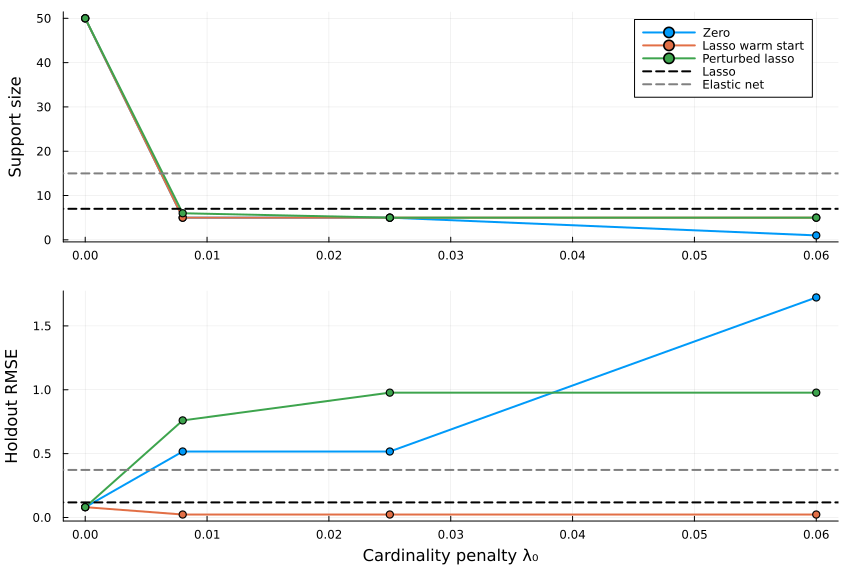

ℓ₀-penalized sparse regression
Lasso and elastic net shrink coefficient magnitudes. A cardinality penalty instead charges the same amount for each nonzero coefficient. For a zero-intercept model, the objective is
$F_0(\beta) = \|y-X\beta\|_2^2/(2n) + \lambda_0\,\#\{j:\beta_j\ne 0\}.$
We use iterative hard thresholding (IHT) with ProximalBase's NormL0 proximal operator. The IHT routine belongs to this example. See Supported problems for the available solve! combinations.

using LinearAlgebra, Printf, Random, ProximalBase, ProximalSolversA proximal step and its acceptance test
Let $f(\beta)=\|X\beta-y\|^2/(2n)$ and $t=1/L$. The proximal step minimizes the linearization of $f$ plus $\|z-\beta\|^2/(2t)+\lambda_0\|z\|_0$ over $z$. ProximalBase keeps entries of $\beta-t\nabla f(\beta)$ whose magnitudes exceed $\sqrt{2t\lambda_0}$ for positive $\lambda_0$. It returns positive zero at an exact tie. At level zero the map is the identity.
For least squares, the remainder after linearization is exactly $\|X(z-\beta)\|^2/(2n)$. If this is at most $\|z-\beta\|^2/(2t)$, comparing the proximal model at its minimizer and at the current point gives $F_0(z)\le F_0(\beta)$ in exact arithmetic. Start with a conservative inverse step, twice the computed spectral curvature (or 1 if larger). Check the directional inequality and the objective at each trial. On rejection double the inverse step, up to a finite trial limit. The computed objective may increase by at most 64eps(T) times the larger objective magnitude to allow for rounding on these moderate-scale examples.
Use the same conservative reference step $t_*$ throughout a fit for the residual $\|\beta-\operatorname{prox}_{t_*\lambda_0\|\cdot\|_0} (\beta-t_*\nabla f(\beta))\|_\infty/t_*$. Check it at the initial point and after each accepted step. A large inverse step chosen by backtracking does not relax this test. A small residual settles the example's tolerance check at this step size and gives no global certificate.
reference_inverse_step(X::Matrix{T}) where {T} = max(one(T), 2 * opnorm(X)^2 / size(X, 1))
training_loss(X, y, beta) = sum(abs2, y - X * beta) / (2 * length(y))
l0_objective(X, y, beta, lambda0) = training_loss(X, y, beta) + lambda0 * count(!iszero, beta)
rounding_allowance(a::T, b::T) where {T} = 64eps(T) * max(abs(a), abs(b))
function iht(X::Matrix{T}, y::Vector{T}, lambda0::T, start::Vector{T};
Lref = reference_inverse_step(X), initial_L = Lref,
tol = T(1e-8), maxiter = 10_000, max_trials = 16) where {T<:Union{Float32, Float64}}
n, p = size(X)
n > 0 && p > 0 && length(y) == n && length(start) == p ||
throw(DimensionMismatch("incompatible design, response or start"))
all(isfinite, X) && all(isfinite, y) && all(isfinite, start) ||
throw(ArgumentError("use finite tutorial data"))
0 <= lambda0 < Inf && 0 < Lref < Inf && 0 < initial_L < Inf &&
0 <= tol < Inf && maxiter >= 0 && max_trials > 0 ||
throw(ArgumentError("invalid level, inverse step, tolerance or work limit"))
g = NormL0(lambda0)
beta = copy(start)
r = X * beta - y
current = dot(r, r) / (2n) + lambda0 * count(!iszero, beta)
objectives = T[current]
L = T(initial_L)
t_ref = inv(T(Lref))
rejected = 0
residual = T(Inf)
status = :iteration_limit
for k in 0:maxiter
grad = (X' * r) / n
ref_input = beta - t_ref * grad
if !(isfinite(current) && 0 < t_ref < Inf && all(isfinite, ref_input))
status = :numerical_failure
break
end
residual = norm(beta - prox(g, ref_input, t_ref), Inf) / t_ref
if !isfinite(residual)
status = :numerical_failure
break
elseif residual <= tol
status = :stationary_within_tolerance
break
end
k == maxiter && break
accepted = false
for _ in 1:max_trials
t = inv(L)
isfinite(L) && isfinite(t) && t > 0 || break
input = beta - t * grad
if all(isfinite, input)
z = prox(g, input, t)
d = z - beta
image_sq = sum(abs2, X * d) / n
step_sq = sum(abs2, d)
r_next = X * z - y
trial = dot(r_next, r_next) / (2n) + lambda0 * count(!iszero, z)
if isfinite(image_sq) && isfinite(step_sq) && isfinite(trial) &&
t * image_sq <= step_sq &&
trial - current <= rounding_allowance(trial, current)
push!(objectives, trial)
if z == beta
status = :numerical_stagnation
end
beta, r, current = z, r_next, trial
accepted = true
break
end
end
rejected += 1
L *= 2
end
if !accepted
status = :line_search_failed
break
end
status == :numerical_stagnation && break
end
(; beta, objective = current, residual, t_ref, status,
iterations = length(objectives) - 1, rejected, objectives)
endiht (generic function with 1 method)Independent checks on small problems
For every subset, solve least squares on those columns and count the actual nonzeros of the resulting vector. A restricted least-squares fit to a candidate's support can only lower its loss and can only retain or reduce its support size. Thus the best enumerated objective is the global reference in exact arithmetic. We use full-rank designs and solve the reference problems in Float64 from the supplied data, including for Float32 inputs. Enumeration costs exponentially many fits.
function exhaustive_support(X, y, lambda0)
A, b = Float64.(X), Float64.(y)
p = size(A, 2)
best = (beta = zeros(p), objective = Inf)
for mask in 0:((1 << p) - 1)
support = [j for j in 1:p if !iszero(mask & (1 << (j - 1)))]
beta = zeros(p)
if !isempty(support)
beta[support] = A[:, support] \ b
end
objective = l0_objective(A, b, beta, Float64(lambda0))
if objective < best.objective
best = (; beta, objective)
end
end
best
endexhaustive_support (generic function with 1 method)Recompute the fixed-point residual from X and y in higher precision. This reference uses the scalar minimizer directly to check the PB-based iterate.
function independent_residual(X, y, beta, lambda0, t)
A, b, x = BigFloat.(X), BigFloat.(y), BigFloat.(beta)
step = BigFloat(t)
v = x - step * (A' * (A * x - b) / length(y))
cutoff_squared = 2 * step * BigFloat(lambda0)
z = [abs2(vj) > cutoff_squared ? vj : zero(vj) for vj in v]
Float64(norm(x - z, Inf) / step)
end
function check_iht(X, y, lambda0, fit; checktol)
beta = fit.beta
objective = l0_objective(Float64.(X), Float64.(y), Float64.(beta), Float64(lambda0))
residual = independent_residual(X, y, beta, lambda0, fit.t_ref)
@assert eltype(beta) === eltype(X) && all(isfinite, beta) && all(isfinite, fit.objectives)
@assert isfinite(fit.objective) && isfinite(fit.residual) && isfinite(residual)
@assert isapprox(fit.objective, objective; atol = checktol, rtol = checktol)
@assert isapprox(fit.residual, residual; atol = checktol, rtol = checktol)
@assert all(b - a <= rounding_allowance(a, b) for (a, b) in zip(fit.objectives, @view(fit.objectives[2:end])))
(; objective, residual)
endcheck_iht (generic function with 1 method)With the two correlated columns below, the best singleton fits are $(1,0)$ and $(0,0.8)$. At the reference step each fit's active entry stays above threshold while the inactive entry's gradient step stays below it. They are distinct fixed points. The second pays the same cardinality cost and leaves more residual loss. Starts on either side of this support choice can therefore settle on different solutions.
function small_checks(::Type{T}) where {T}
tol = T === Float32 ? T(8e-6) : T(1e-8)
checktol = T === Float32 ? 2e-6 : 2e-12
# At t = 1/2 and λ = 1 the threshold is exactly 1. Check both signs,
# their adjacent magnitudes, the stored zero sign, and the fused value.
input = T[prevfloat(one(T)), -prevfloat(one(T)), 1, -1,
nextfloat(one(T)), -nextfloat(one(T)), -zero(T)]
expected = T[0, 0, 0, 0, input[5], input[6], 0]
@assert isequal(prox(NormL0(one(T)), input, T(0.5)), expected)
output = similar(input)
@assert value_and_prox!(output, NormL0(one(T)), input, T(0.5)) === T(2)
@assert isequal(output, expected)
@assert isequal(prox(NormL0(zero(T)), input, T(0.5)), input)
rho, lambda0 = T(0.8), T(0.1)
X = sqrt(T(2)) * T[1 rho; 0 sqrt(1 - rho^2)]
truth = T[1, 0]
y = X * truth
global_fit = exhaustive_support(X, y, lambda0)
@assert isapprox(global_fit.objective, 0.10; atol = checktol)
for (start, support, target) in ((zeros(T, 2), [1], 0.10), (T[0, 0.7], [2], 0.28))
fit = iht(X, y, lambda0, start; tol)
verified = check_iht(X, y, lambda0, fit; checktol)
@assert fit.status == :stationary_within_tolerance && verified.residual <= tol + checktol
@assert findall(!iszero, fit.beta) == support
@assert isapprox(verified.objective, target; atol = checktol)
gap = verified.objective - global_fit.objective
@assert gap >= -checktol
@printf("%s trap, start=%s, support=%s, F0=%.7f, global gap=%.7f, residual=%.3g, accepted=%d, rejected=%d, %s\n",
T, start, support, verified.objective, gap, verified.residual, fit.iterations, fit.rejected, fit.status)
end
# A second full-rank design gives a separate exhaustive reference.
A = T[2 1 0 0; 0 2 1 0; 0 0 2 1; 0 0 0 2; 1 0 1 0]
b = A * T[1, 0, -0.8, 0] + T[0, 0.02, 0, -0.01, 0]
for level in T[0, 0.12]
reference = exhaustive_support(A, b, level)
for start in (zeros(T, 4), T[1, 0.1, -0.5, 0.05])
fit = iht(A, b, level, start; tol)
verified = check_iht(A, b, level, fit; checktol)
@assert fit.status == :stationary_within_tolerance && verified.residual <= tol + checktol
@assert verified.objective >= reference.objective - checktol
if iszero(level)
@assert norm(fit.beta - (Float64.(A) \ Float64.(b)), Inf) <= 5tol
end
@printf("%s reference, level=%.2f, F0=%.7f, exhaustive=%.7f, residual=%.3g, accepted=%d, rejected=%d, %s\n",
T, level, verified.objective, reference.objective, verified.residual, fit.iterations, fit.rejected, fit.status)
end
end
# A one-dimensional quadratic with curvature 4 rejects inverse steps
# 1/2, 1, and 2. At 4 the zero-level prox takes the exact minimizer.
A, b, start = reshape(T[2], 1, 1), T[2], zeros(T, 1)
fit = iht(A, b, zero(T), start; initial_L = T(0.5), max_trials = 4, tol)
@assert fit.status == :stationary_within_tolerance && fit.beta == T[1]
@assert fit.iterations == 1 && fit.rejected == 3
check_iht(A, b, zero(T), fit; checktol)
refused = iht(A, b, zero(T), start; initial_L = T(0.5), max_trials = 3, tol)
@assert refused.status == :line_search_failed && refused.beta == start
@assert refused.iterations == 0 && refused.rejected == 3
@assert check_iht(A, b, zero(T), refused; checktol).residual == 4
limited = iht(A, b, zero(T), start; maxiter = 1, tol)
@assert limited.status == :iteration_limit && limited.iterations == 1
@assert check_iht(A, b, zero(T), limited; checktol).residual == 2
stalled = iht(A, b, zero(T), T[0.5]; initial_L = T(1e20), tol)
@assert stalled.status == :numerical_stagnation && stalled.beta == T[0.5]
@assert check_iht(A, b, zero(T), stalled; checktol).residual == 2
@printf("%s work checks, trials accepted/rejected=%d/%d, bounded failure=%s, limit=%s, stall=%s\n",
T, fit.iterations, fit.rejected, refused.status, limited.status, stalled.status)
end
small_checks(Float32)
small_checks(Float64)Float32 trap, start=Float32[0.0, 0.0], support=[1], F0=0.1000000, global gap=0.0000000, residual=5.9e-06, accepted=37, rejected=0, stationary_within_tolerance
Float32 trap, start=Float32[0.0, 0.7], support=[2], F0=0.2800000, global gap=0.1800000, residual=7.99e-06, accepted=29, rejected=0, stationary_within_tolerance
Float32 reference, level=0.00, F0=0.0000002, exhaustive=0.0000002, residual=7.33e-06, accepted=58, rejected=0, stationary_within_tolerance
Float32 reference, level=0.00, F0=0.0000002, exhaustive=0.0000002, residual=7.83e-06, accepted=55, rejected=0, stationary_within_tolerance
Float32 reference, level=0.12, F0=0.7208500, exhaustive=0.2400431, residual=0, accepted=0, rejected=0, stationary_within_tolerance
Float32 reference, level=0.12, F0=0.2400431, exhaustive=0.2400431, residual=6.09e-06, accepted=36, rejected=0, stationary_within_tolerance
Float32 work checks, trials accepted/rejected=1/3, bounded failure=line_search_failed, limit=iteration_limit, stall=numerical_stagnation
Float64 trap, start=[0.0, 0.0], support=[1], F0=0.1000000, global gap=0.0000000, residual=8.8e-09, accepted=57, rejected=0, stationary_within_tolerance
Float64 trap, start=[0.0, 0.7], support=[2], F0=0.2800000, global gap=0.1800000, residual=8.58e-09, accepted=50, rejected=0, stationary_within_tolerance
Float64 reference, level=0.00, F0=0.0000002, exhaustive=0.0000002, residual=8.85e-09, accepted=104, rejected=0, stationary_within_tolerance
Float64 reference, level=0.00, F0=0.0000002, exhaustive=0.0000002, residual=8.79e-09, accepted=102, rejected=0, stationary_within_tolerance
Float64 reference, level=0.12, F0=0.7208500, exhaustive=0.2400431, residual=0, accepted=0, rejected=0, stationary_within_tolerance
Float64 reference, level=0.12, F0=0.2400431, exhaustive=0.2400431, residual=8.49e-09, accepted=60, rejected=0, stationary_within_tolerance
Float64 work checks, trials accepted/rejected=1/3, bounded failure=line_search_failed, limit=iteration_limit, stall=numerical_stagnationSparse recovery with correlated predictors
Use 200 training observations, 50 predictors with AR(1) correlation $\rho^{|j-k|}$, and independent Gaussian training noise with standard deviation 0.15. The five planted coefficients are known. Measure prediction error on 1,000 fresh predictor rows against their noiseless means, so this diagnostic estimates error in the fitted mean. Count exact zeros in each method's own representation. Tuning levels are illustrative and specified before fitting.
function correlated_design(rng, n, p, rho)
X = randn(rng, n, p)
for j in 2:p
X[:, j] .= rho .* X[:, j - 1] .+ sqrt(1 - rho^2) .* X[:, j]
end
X
end
rng = Xoshiro(423)
n, p, rho, sigma = 200, 50, 0.8, 0.15
X = correlated_design(rng, n, p, rho)
truth = zeros(p)
truth[[2, 10, 19, 31, 45]] = [1.6, -1.3, 1.0, -0.75, 0.5]
y = X * truth + sigma * randn(rng, n)
X_holdout = correlated_design(rng, 1_000, p, rho)
function recovery_metrics(beta, truth, X_holdout)
selected, planted = findall(!iszero, beta), findall(!iszero, truth)
error = beta - truth
(; size = length(selected), tp = length(intersect(selected, planted)),
fp = length(setdiff(selected, planted)), fn = length(setdiff(planted, selected)),
coefficient_error = norm(error), prediction_rmse = norm(X_holdout * error) / sqrt(size(X_holdout, 1)))
end
function print_recovery(name, beta, truth, X_holdout)
m = recovery_metrics(beta, truth, X_holdout)
@printf("%-20s support=%2d TP/FP/FN=%d/%d/%d coefficient L2=%.5f holdout RMSE=%.5f",
name, m.size, m.tp, m.fp, m.fn, m.coefficient_error, m.prediction_rmse)
m
endprint_recovery (generic function with 1 method)Fit lasso and elastic net through the supported dense PGD interface. Check their own objectives and the convex coordinate optimality equations from the raw data. Their penalized objectives have different definitions and units of tuning. We compare recovery and prediction on shared scales.
function convex_fit(X, y, penalty, lambda1, lambda2)
f = (1 / length(y)) * LeastSquaresLoss(y, X)
beta = zeros(size(X, 2))
options = ProximalOptions(maxiter = 10_000, ftol = 1e-14, xtol = 1e-12, gradtol = 1e-9)
fit = solve!(beta, f, penalty, ProximalGradientDescent(), options)
own_objective = training_loss(X, y, beta) + lambda1 * sum(abs, beta) + (lambda2 / 2) * sum(abs2, beta)
grad = X' * (X * beta - y) / length(y) + lambda2 * beta
kkt = maximum(iszero(beta[j]) ? max(abs(grad[j]) - lambda1, 0.0) :
abs(grad[j] + lambda1 * sign(beta[j])) for j in eachindex(beta))
@assert isapprox(fit.minimum, own_objective; rtol = 1e-10) && kkt <= 1e-7
(; beta, own_objective, kkt, fit)
end
lambda1, lambda2 = 0.045, 0.08
lasso = convex_fit(X, y, NormL1(lambda1), lambda1, 0.0)
elastic = convex_fit(X, y, ElasticNet(lambda1, lambda2), lambda1, lambda2)
for (name, model) in (("Lasso", lasso), ("Elastic net", elastic))
print_recovery(name, model.beta, truth, X_holdout)
reason = model.fit.converged ? :solver_stop_passed :
model.fit.iteration_converged ? :iteration_limit : :solver_stopped_without_convergence
@printf(" own objective=%.7f, KKT=%.3g, iterations=%d, line-search trials=%d, %s\n",
model.own_objective, model.kkt, model.fit.iterations, model.fit.backtrack_steps, reason)
endLasso support= 7 TP/FP/FN=5/2/0 coefficient L2=0.14398 holdout RMSE=0.11793 own objective=0.2357293, KKT=6.7e-10, iterations=135, line-search trials=152, solver_stopped_without_convergence
Elastic net support=15 TP/FP/FN=5/10/0 coefficient L2=0.78466 holdout RMSE=0.37207 own objective=0.4044684, KKT=2.44e-09, iterations=144, line-search trials=166, solver_stopped_without_convergenceComparing starts at the same penalty level
Use zero, a lasso warm start and a perturbed lasso start that swaps a signal coefficient to an adjacent predictor. For each fixed $\lambda_0$ we score all candidates, including the two convex fits, under the same $F_0$. These evaluations of the convex fits are reference scores under $F_0$, while their own optimization objectives were reported above. The level-zero solution is an unpenalized baseline. The positive levels show how changing the entry cost changes the recovery and prediction tradeoff.
perturbed = copy(lasso.beta)
perturbed[3] += perturbed[2]
perturbed[2] = 0
starts = ("Zero" => zeros(p), "Lasso warm start" => lasso.beta, "Perturbed lasso" => perturbed)
levels = [0.0, 0.008, 0.025, 0.06]
Lref = reference_inverse_step(X)
records = map(levels) do level
map(starts) do (name, start)
fit = iht(X, y, level, start; Lref)
verified = check_iht(X, y, level, fit; checktol = 2e-12)
@assert fit.status == :stationary_within_tolerance && verified.residual <= 1e-8 + 2e-12
@printf("lambda0=%.3f ", level)
m = print_recovery(name, fit.beta, truth, X_holdout)
@printf(" F0=%.7f, residual=%.3g, accepted=%d, rejected=%d, %s\n",
verified.objective, verified.residual, fit.iterations, fit.rejected, fit.status)
m
end
end
for level in levels
@printf("lambda0=%.3f, lasso scored under F0=%.7f, elastic net scored under F0=%.7f\n",
level, l0_objective(X, y, lasso.beta, level), l0_objective(X, y, elastic.beta, level))
endlambda0=0.000 Zero support=50 TP/FP/FN=5/45/0 coefficient L2=0.15038 holdout RMSE=0.08074 F0=0.0086919, residual=1e-08, accepted=4054, rejected=0, stationary_within_tolerance
lambda0=0.000 Lasso warm start support=50 TP/FP/FN=5/45/0 coefficient L2=0.15038 holdout RMSE=0.08074 F0=0.0086919, residual=9.97e-09, accepted=3324, rejected=0, stationary_within_tolerance
lambda0=0.000 Perturbed lasso support=50 TP/FP/FN=5/45/0 coefficient L2=0.15038 holdout RMSE=0.08074 F0=0.0086919, residual=9.97e-09, accepted=4018, rejected=0, stationary_within_tolerance
lambda0=0.008 Zero support= 5 TP/FP/FN=4/1/1 coefficient L2=0.51785 holdout RMSE=0.51651 F0=0.1616534, residual=9.91e-09, accepted=1649, rejected=0, stationary_within_tolerance
lambda0=0.008 Lasso warm start support= 5 TP/FP/FN=5/0/0 coefficient L2=0.02397 holdout RMSE=0.02308 F0=0.0509420, residual=9.72e-09, accepted=312, rejected=0, stationary_within_tolerance
lambda0=0.008 Perturbed lasso support= 6 TP/FP/FN=4/2/1 coefficient L2=1.96808 holdout RMSE=0.76001 F0=0.3104731, residual=9.9e-09, accepted=862, rejected=0, stationary_within_tolerance
lambda0=0.025 Zero support= 5 TP/FP/FN=4/1/1 coefficient L2=0.51785 holdout RMSE=0.51651 F0=0.2466534, residual=9.96e-09, accepted=1559, rejected=0, stationary_within_tolerance
lambda0=0.025 Lasso warm start support= 5 TP/FP/FN=5/0/0 coefficient L2=0.02397 holdout RMSE=0.02308 F0=0.1359420, residual=9.72e-09, accepted=312, rejected=0, stationary_within_tolerance
lambda0=0.025 Perturbed lasso support= 5 TP/FP/FN=4/1/1 coefficient L2=2.08568 holdout RMSE=0.97739 F0=0.5735650, residual=9.75e-09, accepted=359, rejected=0, stationary_within_tolerance
lambda0=0.060 Zero support= 1 TP/FP/FN=1/0/4 coefficient L2=1.87782 holdout RMSE=1.72274 F0=1.6702173, residual=9.49e-09, accepted=303, rejected=0, stationary_within_tolerance
lambda0=0.060 Lasso warm start support= 5 TP/FP/FN=5/0/0 coefficient L2=0.02397 holdout RMSE=0.02308 F0=0.3109420, residual=9.72e-09, accepted=312, rejected=0, stationary_within_tolerance
lambda0=0.060 Perturbed lasso support= 5 TP/FP/FN=4/1/1 coefficient L2=2.08568 holdout RMSE=0.97739 F0=0.7485650, residual=9.75e-09, accepted=359, rejected=0, stationary_within_tolerance
lambda0=0.000, lasso scored under F0=0.0163553, elastic net scored under F0=0.0602979
lambda0=0.008, lasso scored under F0=0.0723553, elastic net scored under F0=0.1802979
lambda0=0.025, lasso scored under F0=0.1913553, elastic net scored under F0=0.4352979
lambda0=0.060, lasso scored under F0=0.4363553, elastic net scored under F0=0.9602979The plot separates size from prediction error. Horizontal lines are the fixed lasso and elastic-net fits. Overlapping curves mean the displayed metric agrees at those levels. Equal support size alone can hide different selected predictors, so check the discovery counts and fixed-point example.
using Plots
size_plot = plot(; ylabel = "Support size", legend = :topright)
error_plot = plot(; xlabel = "Cardinality penalty λ₀", ylabel = "Holdout RMSE", legend = false)
for (j, (label, _)) in enumerate(starts)
plot!(size_plot, levels, [r[j].size for r in records]; label, marker = :circle, linewidth = 2)
plot!(error_plot, levels, [r[j].prediction_rmse for r in records]; label, marker = :circle, linewidth = 2)
end
for (label, model, color) in (("Lasso", lasso, :black), ("Elastic net", elastic, :gray))
m = recovery_metrics(model.beta, truth, X_holdout)
hline!(size_plot, [m.size]; label, color, linestyle = :dash, linewidth = 2)
hline!(error_plot, [m.prediction_rmse]; label, color, linestyle = :dash, linewidth = 2)
end
primary_figure = plot(size_plot, error_plot; layout = (2, 1), size = (850, 580))
savefig(primary_figure, "l0_sparse_regression.svg")
nothingLimitations and exercises
Correlation can support several nearly interchangeable sparse fits. The tiny example certifies a positive optimization gap for one start. On the larger design the exhaustive search is impractical, so the residuals describe computed IHT fixed points and the support and prediction metrics describe statistical recovery on this simulated sample.
- Increase the correlation and compare false discoveries with holdout prediction error.
- On the tiny design, change the starting support or the conservative step and check which fixed point you obtain against the same exhaustive reference.
- Select tuning levels using a separate validation sample and compare recovery on several fresh training and holdout samples.